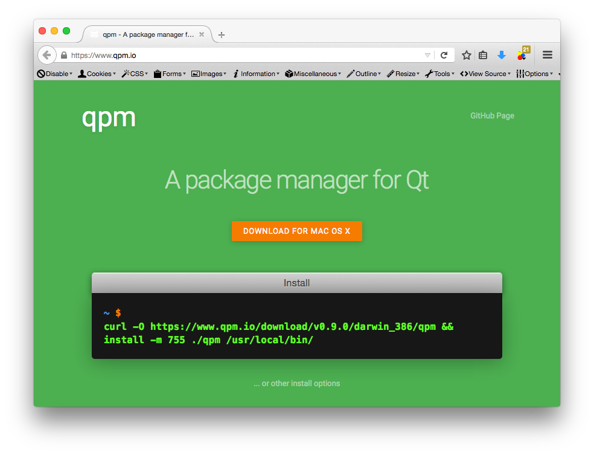
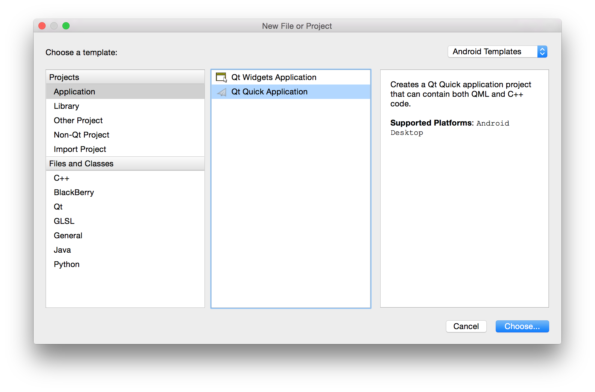
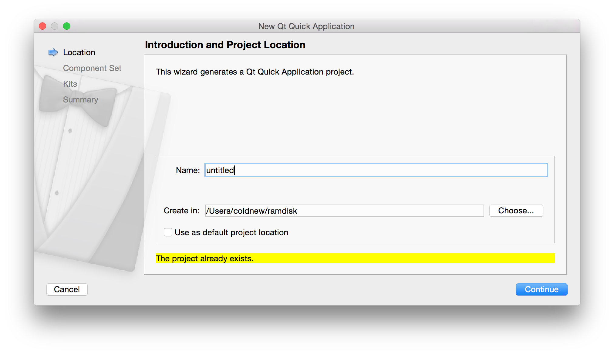
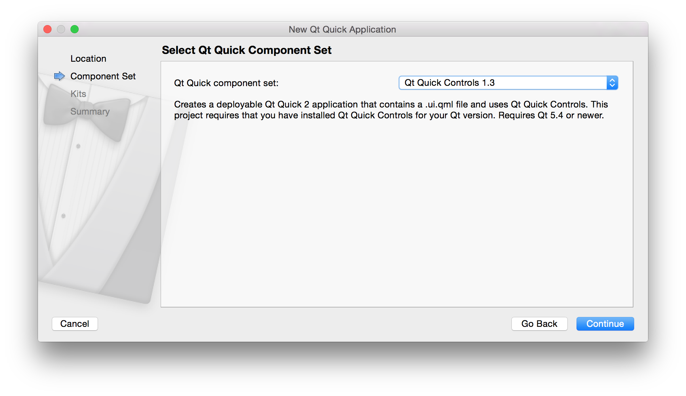
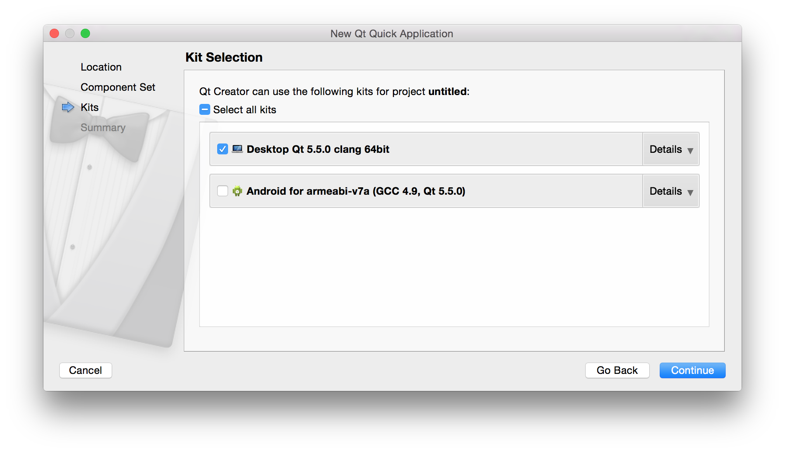
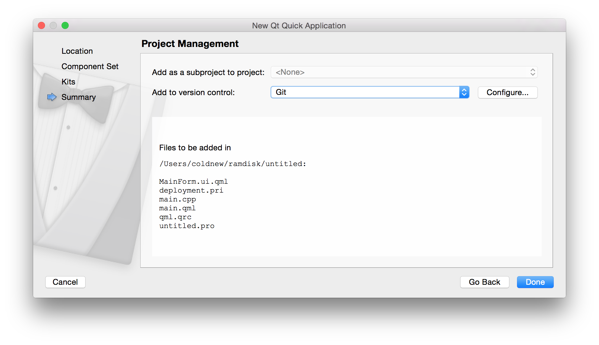
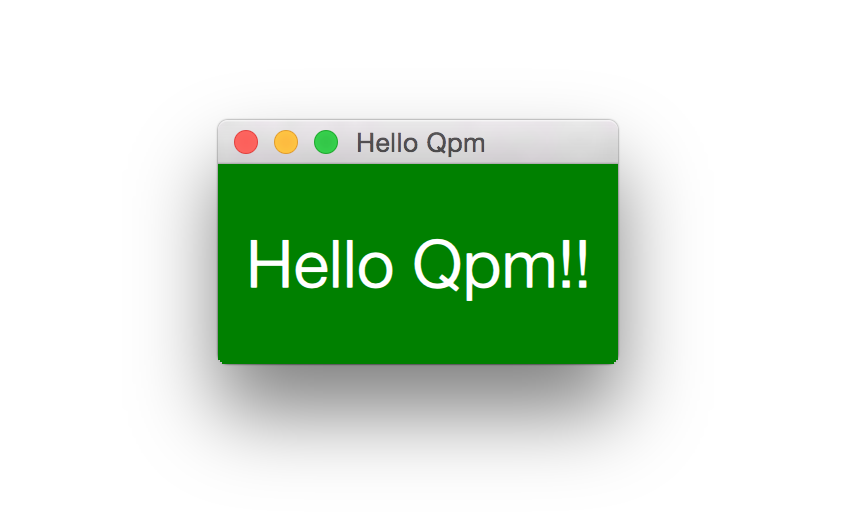

一直以來，我的 Qt 程式如果需要第三方的模組，通常都是使用 git submodule 去將他加 入到我的專案來，但是這樣總是缺少了一些彈性，畢竟蠻多人不太會用 git 的 submodule 功能 :( 。
qpm 是一個類似 node.js 的 npm 的套件管理程式，透過他可以讓你安裝第三方的 Qt 模組
就像開發 node.js 程式那樣方便，當你使用 qpm 安裝新的模組時，他下載的是 程式碼
，因此你可以確保你的程式編譯出來可以完整相容第三方套件，而不會有因為 API 改變而
導致程式掛掉的問題。
讓我們來開始使用 qpm 吧 :)
安裝 qpm
如果你是 Windows、Mac OSX 的使用者，你可以直接連到 http://qpm.io ，上面會有安裝 教學。
由於目前沒有提供 Linux 的二進制版，因此必須自己編譯，Linux 使用者請參考 手動編譯 qpm 一節來編譯你的 qpm 程式。

手動編譯 qpm
目前 qpm 提供了 Windows、Mac OSX 兩個系統的 binary 程式，Linux 下就必須自己動手編 譯，不過也不要灰心，編譯 qpm 是非常容易的。
首先我們需要安裝 Go 語言的支援，在我的 Gentoo Linux 系統下是這樣安裝的:
coldnew@gentoo ~ $ sudo emerge dev-lang/go
如果你的系統是 Ubuntu，你則是可以參考 這份文件 ，使用以下命令安裝:
coldnew@ubuntu ~ $ sudo apt-get install golang
接下來我們需要取得 qpm 的程式碼，並更新其使用的 git submodule
git clone https://github.com/Cutehacks/qpm.git && cd qpm git submodule init git submoodule update
完成後你只需要使用 make 命令，qpm 就編譯完成囉 ~
coldnew@gentoo ~/qpm $ make GOPATH=:~/qpm: go install qpm.io/qpm
你會在當前目錄看到有一個 bin 的目錄產生，裡面就是我們需要的 qpm 執行檔，將他移
動到你的 PATH 變數可以找到的地方即可 (ex: /usr/local/bin)
coldnew@gentoo ~/qpm $ ls bin qpm
Hello Qpm
我們首先使用 QtCreator 建立一個簡單的 Qt Quick Application 專案

當然名稱、專案的路徑就隨你高興囉 ~

這邊我選用 Qt QuickControl 1.3，不過其實選什麼都可以 (只要你建的專案可以顯示 QML 程式就好)

選擇 Desktop 版本

要不要加入版本管理也是隨個人的喜好 ~

按下 Done 按鈕後基本的 Qt Quick 程式就完成了，是 qpm 出馬的時候了，我們先開
shell 切到專案目錄，並使用 qpm 安裝 io.qpm.example
coldnew@gentoo ~/untitle $ qpm install io.qpm.example Installing io.qpm.example@0.0.1
你會發現增加了 vendor 目錄以及 qpm.json 檔案，而 vendor 目錄下則是第三方程式
的程式碼
coldnew@Sara ~/untitled $ tree
.
├── MainForm.ui.qml
├── deployment.pri
├── main.cpp
├── main.qml
├── qml.qrc
├── qpm.json
├── untitled.pro
├── untitled.pro.user
└── vendor
├── io
│ └── qpm
│ └── example
│ ├── HelloQpm.qml
│ ├── LICENSE
│ ├── README.md
│ ├── helloqpm.cpp
│ ├── helloqpm.h
│ ├── helloqpm.js
│ ├── io_qpm_example.pri
│ ├── io_qpm_example.qrc
│ ├── qmldir
│ ├── qpm.h
│ └── qpm.json
└── vendor.pri
4 directories, 20 files
qpm.json 實際上就是類似 node.js 的 package.json 這樣的角色，我們可以看到裡面紀錄 了我們安裝的套件的版本資訊
{ "name": "", "description": "", "dependencies": [ "io.qpm.example@0.0.1" ], "license": "NONE", "pri_filename": "", "webpage": "" }
接下來，我們必須編輯我們專案的 *.pro 檔案，以本文的範例就是 untitle.pro ，在
裡面加入以下這一行，讓 Qt 知道要去查看 vendor 目錄下的其他程式
include(vendor/vendor.pri)
接著修改 main.cpp ，加入 QPM_INIT 這個巨集，他會讓 Qt 程式知道第三方模組的
resource 位置 (ex: qml, images)。
如果我們要使用 io.qpm.example 裡面的 C++ class, 則記得要使用相對應的 namespace。
diff --git a/main.cpp b/main.cpp --- a/main.cpp +++ b/main.cpp @@ -1,12 +1,18 @@ #include <QApplication> #include <QQmlApplicationEngine> +#include <QDebug> +#include <io/qpm/example/helloqpm.h> int main(int argc, char *argv[]) { QApplication app(argc, argv); + io::qpm::example::HelloQpm hello; + qDebug() << hello.message(); + QQmlApplicationEngine engine; + QPM_INIT(engine) // <-- Add this for qml, images resource engine.load(QUrl(QStringLiteral("qrc:/main.qml"))); return app.exec();
接著修改 main.qml ，並將程式改成如下:
import QtQuick 2.4 import QtQuick.Controls 1.3 import QtQuick.Window 2.2 import io.qpm.example 1.0 ApplicationWindow { title: qsTr("Hello Qpm") width: 200 height: 100 visible: true HelloQpm { anchors.fill: parent } }
編譯並執行，你就會發現我們顯示的視窗的確是使用到了 io.qpm.example 裡面的模組，
此外也會看到 console 顯示了 Hello from C++ 這樣的訊息。

更多 qpm 使用方式
想要知道完整的 qpm 使用方式，問 qpm 最快了，目前我使用的 qpm 顯示的結果如下:
coldnew@Sara ~ $ qpm -h qpm is a tool for managing Qt dependencies Usage: qpm COMMAND [args] The currently supported commands are: uninstall Uninstalls a package check Checks the package for common errors sign Creates a PGP signature for the package (experimental) verify Verifies the package PGP signature (experimental) ping Pings the server init Initializes a new module in the current directory info Displays information about the specified package install Installs a new package publish Publishes a new module help Shows the help text for a command search Searches for packages containing the given string list Lists all packages in the registry qpm@0.9.0
使用方式大部分都和 npm 一樣，我們可以使用 qpm list 顯示目前有哪些套件
假設我們想知道更多關於 io.qpm.example 的資訊，則可以使用 qpm info 去查詢
coldnew@Sara ~ $ qpm list Package Author --------------------------------------------------------------------------- com.cutehacks.circularimage@1.0.5 Jens Bache-Wiig <jens@cutehacks.com> com.cutehacks.duperagent@0.9.3 Jason Barron <jason@cutehacks.com> com.cutehacks.fontawesome@0.0.3 Henrik Hartz <henrik@cutehacks.com> com.cutehacks.navigationdrawer@0.1.0 Jens Bache-Wiig <jens@cutehacks.com> com.cutehacks.relativetime@0.0.1 Marius Bugge Monsen <marius@cutehacks.com> com.github.benlau.quickpromise@0.0.1 Ben Lau <xbenlau@gmail.com> com.github.quickflux@0.0.2 Ben Lau <xbenlau@gmail.com> de.nebulon.async@0.0.2 Johannes Zellner <johannes@nebulon.de> de.nebulon.request@0.0.2 Johannes Zellner <johannes@nebulon.de> io.qpm.example@0.0.1 Jason Barron <jason@cutehacks.com>
coldnew@Sara ~ $ qpm info io.qpm.example Name: io.qpm.example Author: Jason Barron (jason@cutehacks.com) Webpage: License: MIT Repository: https://github.com/Cutehacks/qpm-example.git Description:
建立 qpm 套件
會使用 qpm 以後，我們也可以試著自己動手製作自己的 qpm 模組，首先先建立一個新的資
料夾，並使用 qpm init 初始化他，這時 qpm 會問你一些關於該模組的資訊
coldnew@Sara ~/io.coldnew.hello $ qpm init Your name: [Yen-Chin Lee] Your email: [coldnew.tw@gmail.com] Unique package name: [com.gmail.io.coldnew.hello] io.coldnew.hello Initial version: [0.0.1] WARNING: Could not auto-detect repository URL. Clone URL: https://github.com/coldnew/qpm-hello Package .pri file: [io_coldnew_hello.pri] Generate boilerplate: [Y/n] y
完成後，你會發現到我們的目錄下增加了以下這些檔案
coldnew@Sara ~/io.coldnew.hello $ tree . ├── LICENSE ├── io_coldnew_hello.pri ├── io_coldnew_hello.qrc ├── qmldir └── qpm.json 0 directories, 5 files
接下來我們就可以來新增我們自己的 Qt 程式，比如說我們建立一個 HelloQpm 模組，首先 建立 helloqpm.h 並填入以下資訊
#include <QObject> #include "qpm.h" QPM_BEGIN_NAMESPACE(io, coldnew, hello) class HelloQpm : public QObject { Q_OBJECT Q_PROPERTY(QString message READ message NOTIFY messageChanged) public: HelloQpm(QObject *parent = 0); inline QString message() const {return m_message;} signals: void messageChanged(QString message); private: QString m_message; }; QPM_END_NAMESPACE(io, coldnew, hello)
接下來則是 helloqpm.cpp：
#include "helloqpm.h" QPM_BEGIN_NAMESPACE(io, coldnew, hello); HelloQpm::HelloQpm(QObject *parent) : QObject(parent) { m_message = "Hello from C++"; } QPM_END_NAMESPACE(io, coldnew, hello);
完成後要把 helloqpm.h、helloqpm.cpp 資訊加入 io_coldnew_hello.pri 裡面
diff --git a/io_coldnew_hello.pri b/io_coldnew_hello.pri --- a/io_coldnew_hello.pri +++ b/io_coldnew_hello.pri @@ -1,3 +1,9 @@ RESOURCES += \ $$PWD/io_coldnew_hello.qrc + +HEADERS += \ + $$PWD/helloqpm.h + +SOURCES += \ + $$PWD/helloqpm.cpp +
我們也可以建立我們要用的 qml 模組，首先建立 HelloQpm.qml 並加入以下程式
import QtQuick 2.0 Rectangle { width: 200 height: 100 color: "red" Text { color: "white" text: "Hello Qpm!!" anchors.centerIn: parent font.pixelSize: parent.height / 3 } }
接著修改 qmldir，讓他知道有 HelloQpm.qml 的存在以及相對應的版本、模組名稱
diff --git a/qmldir b/qmldir --- a/qmldir +++ b/qmldir @@ -1,2 +1,3 @@ module io.coldnew.hello +HelloQpm 1.0 HelloQpm.qml
我們也記得要將這個 qml 加入到我們的 resource 檔案: io_coldnew_hello.qrc
diff --git a/io_coldnew_hello.qrc b/io_coldnew_hello.qrc --- a/io_coldnew_hello.qrc +++ b/io_coldnew_hello.qrc @@ -2,5 +2,6 @@ <RCC> <qresource prefix="/io/coldnew/hello"> <file>qmldir</file> + <file>HelloQpm.qml</file> </qresource> </RCC>
當你確定你的修改都 ok 後，將變更 commit 進去，是時候將他送到 qpm 裡面了，我們首先
先用 qpm check 在檢查是否有設定出錯
coldnew@Sara ~/io.coldnew.hello $ qpm check OK!
接下來就可以使用 qpm publish 進行發佈，若你帳號不存在的話會順便幫你建立帳號以及 tag。
coldnew@Sara ~/io.coldnew.hello $ qpm publish email: coldnew.tw@gmail.com password: User not found. Confirm password to create a new user. password: Running check OK! Publishing Tag release: [Y/n] y SUCCESS! Publised package: io.coldnew.hello@0.0.1 Revision: 506bf4fc369e736ad3b498fb59a4383c8e05cf6e
完成後，我們可以在使用 qpm search 檢查是否已經送到 qpm 伺服器上了
coldnew@Sara ~/io.coldnew.hello $ qpm search io.coldnew.hello Package Author --------------------------------------------------------------------------- io.coldnew.hello@0.0.1 Yen-Chin Lee <coldnew.tw@gmail.com>
當然也可以使用 qpm info 顯示我們發佈的套件資訊
coldnew@Sara ~/io.coldnew.hello $ qpm info io.coldnew.hello Name: io.coldnew.hello Author: Yen-Chin Lee (coldnew.tw@gmail.com) Webpage: License: MIT Repository: https://github.com/coldnew/qpm-hello Description: